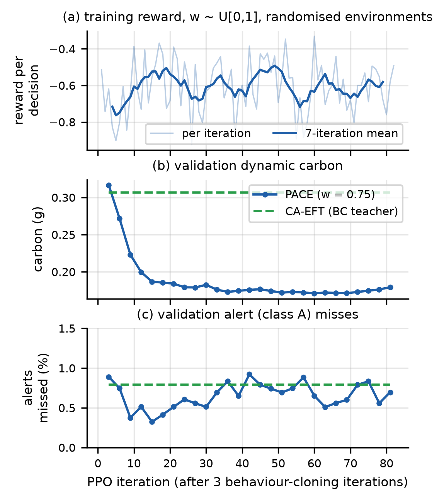
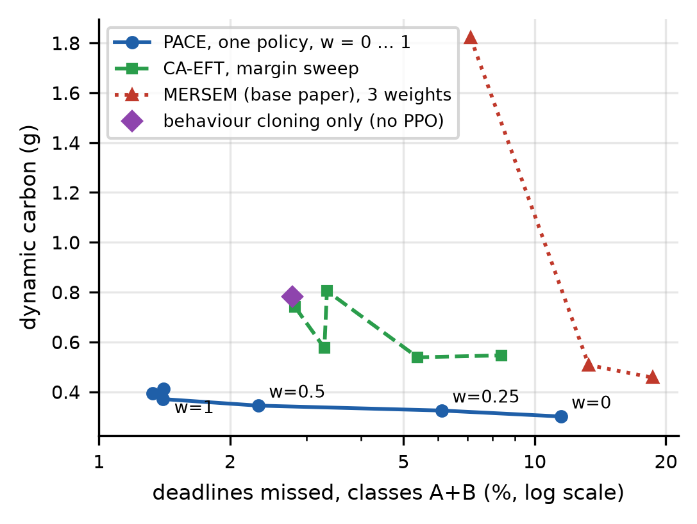
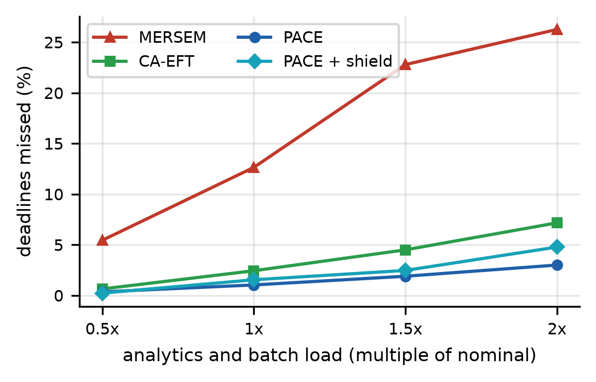

Carbon- and SLA-aware edge–cloud scheduling with deep reinforcement learning · 22AIE401 Reinforcement Learning
Nandu Manoj · Naren Sundar L · Vatturu Pardheev · Charuvarthan T · Guide: Dr. Palmani Duraisamy
| Job class | Example | Deadline | Notes |
|---|---|---|---|
| A · Alert | camera frame → detect pedestrian → alert | 1 second | ≈ 98% of jobs; 30% of cameras are private (stay in India) |
| B · Analytics | graph job from the dataset (many tasks) | seconds | big DAGs, hardest to finish in time |
| C · Batch | graph job from the dataset | 30–120 min | can be deferred to a greener hour |
| SLA / deadline miss | A job finished after its deadline. Main metric: % of class A+B jobs that missed. |
| DAG | A job made of tasks; a task starts only after its parent tasks finish. |
| Dynamic carbon | CO₂ caused by running our tasks (the part a scheduler controls), in grams. |
| w (preference) | 0 to 1. w = 1: only deadlines matter. w = 0: only carbon matters. It is an input to the policy. |
| EFT / CA-EFT | Simple rules. EFT: run where it finishes earliest. CA-EFT: greenest node that still meets the deadline (our strongest simple baseline, and the agent's first teacher). |
| Episode | One simulated stretch of time (20 min of job arrivals, then the remaining work drains). The agent makes thousands of decisions per episode. |
Problem: the same as ours: schedule graph-analytics jobs on edge, fog and cloud so that few jobs miss deadlines and little carbon is emitted.
What they do, intuitively: every 15 minutes they predict the next 15 minutes of jobs, then run an evolutionary (genetic) algorithm that searches for a good "job → machine" plan. The RL part is small: a tabular Q-learning agent only chooses how strongly to mutate plans during the search (5 choices). Objective: a fixed weighted sum, score = ws·(miss rate) + wc·(carbon), with ws + wc = 1.
Dataset: the Rezaee & Adabi DAG workflow dataset (Zenodo, CC-BY-4.0): 51,895 jobs, 1.3 million tasks, typically 7–62 tasks per job, with task sizes, dependencies and deadlines. We use the same dataset: the first 70% of its timeline for training, the last 30% for all tests.
Evaluation: simulation only (extended EdgeCloudSim), against other metaheuristics (PSO-GA, GWO, ...).
| MERSEM (base paper) | PACE (ours) | |
|---|---|---|
| When it decides | Once per 15-min epoch, from a prediction | Online: the moment each task is ready (≈ 1 ms) |
| What it places | A whole job on one machine | Each task separately (a job can span edge and cloud) |
| Role of RL | Q-learning tunes the genetic search | The RL agent is the scheduler (deep RL, PPO) |
| Deadline vs carbon | Fixed weight; re-run the search to change it | One policy for every w; a controller changes w live |
| Knowledge assumed | Exact task runtimes | Only noisy estimates, as in reality |
| Failures, priorities | Not modelled | Crashed nodes masked, tasks re-placed; alert > analytics > batch |
| Safety | None | Safety shield and privacy rules |
| Baselines | Other metaheuristics only | EFT, CA-EFT and MERSEM itself (re-implemented) |
| Evaluation | Simulation only | Simulation and a real AWS testbed |
In RL, the environment is everything outside the agent: it shows the agent a situation, accepts an action, moves forward in time and later says how good the outcome was. Ours is a discrete-event simulator of the edge–fog–cloud system (during training), or the real AWS testbed (when deployed). The agent cannot tell which one it is talking to: both use the same interface.
Note the delayed reward: a placement's consequences are only known when its job finishes, maybe many decisions later. This is exactly the credit-assignment problem RL is built for.
If the agent always trained in one fixed world, it would memorise it. So each episode draws a new one:
| What changes | Range during training | Why |
|---|---|---|
| Number of nodes | 2–6 edge, 1–3 fog, 1–3 cloud | work on any topology |
| Server speeds | ±20% | machines differ |
| Network | delay ×0.7–1.5, bandwidth ×0.5–1.5 | networks vary |
| Load | alerts 0.1–0.4 per camera per s; analytics scaled to server count | quiet and busy hours |
| Estimate noise | 0–40% | real runtimes are never known exactly |
| Preference w | 0 to 1 | one policy for every trade-off |
The ranges matter: in Step 7 the policy fails on a network much slower than anything in this table.
We describe the problem as a (semi-)Markov decision process: state, action, reward, and a transition (the environment of Step 1). "Semi" because decisions do not happen every fixed second but whenever a task becomes ready.
Maximise the sum of future rewards (the return). With γ = 0.8, rewards a few decisions ahead still count, but the agent focuses on the consequences of its own placement.
| Option | Estimated finish | Carbon | What the agent learns to do |
|---|---|---|---|
| Edge (camera box) | 0.05 s · always in time | medium | Mumbai and edge are safe; Stockholm is cleanest but risky for a 1 s deadline. With w = 0.9 (deadlines matter most) it learns to keep alerts near and send flexible analytics and batch work to Stockholm. |
| Mumbai fog | 0.5 s · in time | high (dirty grid) | |
| Stockholm cloud | 0.6 s+ · tight | very low |
Numbers are typical values shown by our live dashboard; the real decision uses all 18 node features.
Actor (the policy above) chooses actions. Critic (a second head) predicts how good the current state is, V(s), which PPO needs. Because the same network scores every node, it works with 6 nodes or 30, and a crashed node is just masked out (≈ 60 K parameters, ≈ 0.55 ms per decision).
↻ repeat with the improved policy (82 iterations, ≈ 3.5 million decisions, ≈ 35 minutes on the laptop CPU)
Before this loop, 3 iterations of behaviour cloning ⑦ teach the agent to imitate CA-EFT. Starting from a random policy would be slow: random placements miss almost every deadline, so almost every reward would be bad and hard to learn from.

Why is the reward curve (a) so noisy? Every episode is a different random world and a different w, so the reward level jumps between episodes. The trend (thick line) and the fixed validation runs (b, c) are what show learning. The agent at w = 0.75 accepts a few more analytics misses than its teacher in exchange for much less carbon: that is the trade-off it was asked to make.
PACE did not work on the first try. Each row is one round of "train → test → find the cause → fix". This is a good viva story: it shows we understood why the agent behaved as it did.
| Version / change | Problem we saw | Reasoning (why it happened) | Fix |
|---|---|---|---|
| v1: job penalty split across the job's tasks | Agent ignored w; missed 45% of analytics deadlines on test jobs | Each task got a tiny share of a big job's penalty: the lateness signal was too weak compared with carbon, so carbon always won. | Give the full penalty (v2) |
| v2: full job penalty to every task | Still poor on large DAGs | All 30 tasks of a late job got the same punishment, even the ones that were placed well: the agent could not tell good from bad decisions (credit assignment). | Deadline decomposition (v3) |
| v3: deadline decomposition | w finally mattered | Each task is judged against its own sub-deadline, which its own placement controls. | Kept |
| v4: class-balanced loss | No gain | Weighting rare analytics decisions more did not fix their outcomes. | Dropped |
| v5: job-pressure features + priority queues (final) | Wide DAGs overloaded the small clean cloud | The critical path alone underestimates a wide job's total work; the agent needed to "see" how much work the job still had. | Final model, pace.pt |
| Behaviour-cloning warm start | Training from scratch was slow | A random policy misses nearly every deadline, so rewards carry little information. | Copy CA-EFT first |
| Safety shield | Pure policy still missed many analytics jobs | A learned policy can take risks a simple check would avoid. | Remove clearly late nodes |
| Fine-tune in the digital twin | Real machines differ from the simulator | Real speeds, delays and CPU contention were different (Step 6). | pace_live.pt |
| Online network estimate | First real run: alerts late | The real network to Mumbai slowed in the evening; estimates were stale. | Add recent extra delay to every estimate |
| Controller reset on a new target | Demo: w did not react to a new SLA target | The controller's memory (Σe) of the old target held w down ("wind-up"). | Reset Σe when the target changes |
There is no learning while deployed: the network's weights are frozen. What adapts live is w (through the controller) and the network estimate. That is why the operator can change the SLA target without retraining.
| ID | Where | Question it answers |
|---|---|---|
| E1 | Simulation | Normal load: who misses fewest deadlines, with how much carbon? (10 seeds) |
| E2–E5 | Simulation | Stress: more load, wrong runtime estimates, node crashes, rush hour |
| E6 | Simulation | Setups never seen in training: bigger city, new region, heavier jobs, slow network |
| E8 / E8b | Real AWS | The same comparison on real machines (E8b = with the network fix); 6 paired runs |
| E9 | Both | How close was the simulator's prediction to the real result? |
Fair comparison: every method sees the same jobs and carbon trace in each seed, tests use only held-out jobs, and we use paired Wilcoxon tests. Our MERSEM is even given a perfect prediction of the next 15 minutes.
| Experiment | MERSEM | CA-EFT | PACE |
|---|---|---|---|
| Simulation, normal load: deadlines missed | 13.3% | 2.8% | 1.3% |
| … dynamic carbon (g) | 0.51 | 0.74 | 0.39 |
| 2× load: missed | 26.3% | 7.2% | 3.0% |
| Unseen: 2× larger city: missed | 17.3% | 4.6% | 0.4% |
| Unseen: much slower network: missed | 24.8% | 1.4% | 17.3% |
| Real AWS, normal / busy hour: missed | 9.4 / 14.3% | 3.7 / 6.2% | 3.8 / 6.6% |


| Fewer misses than MERSEM (13.3% → 1.3%) | PACE decides when each task is ready, using the queues right now. MERSEM's plan is made up to 15 minutes ahead, so under load or after a crash it is out of date (its misses grow fastest in the load plot). PACE also places tasks individually; forcing it to place whole jobs like MERSEM raised analytics misses to 51%. |
| Less carbon than both | The reward taught it which work can afford the trip to clean Stockholm: flexible analytics and batch go north, urgent alerts stay near. CA-EFT uses one fixed safety margin for every task, so it plays safe and sends more work to dirty Mumbai. |
| One policy, any trade-off | w is an input during training (random every episode), so the network learned the whole curve; the controller just moves along it. |
| Bigger network, new region | The shared node scorer judges each node by its features (speed, delay, carbon), not by its identity, so new or extra nodes are just more rows. |
| Robust to noise and failures | Training already contained noisy estimates and varied worlds; crashed nodes are masked and their tasks re-decided immediately. |
| Large analytics jobs: plain PACE misses 23% vs CA-EFT's 6% | (1) Alerts are 98% of decisions, so the learning signal is dominated by alerts. (2) Test DAGs are larger than training ones (median 25 vs 15 tasks): a distribution shift. (3) The reward charges a placement only for its own job, not for the queue it creates for other jobs, so the agent piles big jobs onto the small clean cloud. Fix: the shield brings it to 6%; next step: a reward term for delay caused to others. |
| Much slower network: 17% vs CA-EFT's 1.4% | Training never saw delays above 1.5× normal. Outside that range the learned pattern "Stockholm is reachable in time" is wrong, and the agent keeps sending alerts there. CA-EFT recomputes finish times with a formula, so it adapts. Fix: wider network randomisation in training plus the online network estimate. |
| Real AWS: +15% carbon vs MERSEM | At w = 0.9 PACE is told deadlines matter most, so it spends some carbon to miss fewer (6/6 runs better on deadlines). MERSEM sits at a different point (less carbon, many more misses). The carbon difference is not statistically significant (p = 0.16). |
| First real run lost to MERSEM | Network drift (Step 6): PACE trusted the calibrated delay to Mumbai. Fixed by the online estimate (E8b). |
| Simulator is optimistic | Real misses were 1–5 points higher than the twin predicted: the campus network varies more than the simulated one. |
| Limitations | Carbon data is synthetic (built from real yearly averages; free hourly data for India was unavailable). Small testbed: 6 nodes, 3 seeds per load. |
Q: What exactly is the environment? A discrete-event simulator of edge, fog and cloud nodes, network links and arriving DAG jobs (training), or the real AWS testbed (deployment). It shows the agent a task and its options, applies the choice, and returns rewards when jobs finish.
Q: Is it on-policy or off-policy? On-policy: PPO only learns from data collected by the current policy, then throws it away and collects new data.
Q: Why PPO and not DQN? Policy-gradient methods handle a changing set of legal actions (masks) and a variable number of nodes naturally, and PPO's clipping keeps training stable.
Q: How does it explore? During training actions are sampled from the softmax, plus an entropy bonus; at deployment it takes the most likely action.
Q: Why γ = 0.8? A placement mostly affects its own job; a short horizon makes credit assignment easier and training faster.
Q: Does it keep learning after deployment? No, the weights are frozen. Only w (via the controller) and the network estimate adapt live.
Q: Why behaviour cloning first? A random policy misses nearly every deadline, so it learns slowly. Copying CA-EFT is a good start; PPO then beats its teacher.
Q: What is new compared with MERSEM? Online task-level decisions, deep RL as the scheduler, one policy for all w with a live controller, failure handling, and real-machine tests.
Q: Is the comparison fair? Yes: same jobs and carbon traces; our MERSEM even gets a perfect prediction of the next 15 minutes and an EFT fallback for failures.
Q: How is carbon measured on AWS? AWS has no power meter, so: CPU time × published watts per vCPU × PUE × grid intensity (the same model as MERSEM).